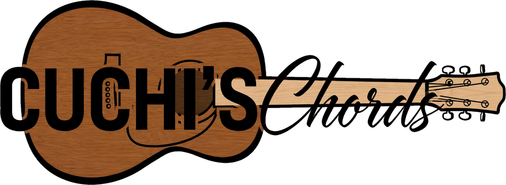

<!doctype html>
<html lang="es"><head>
<meta charset="utf-8">
<meta name="viewport" content="width=device-width,initial-scale=1,viewport-fit=cover">
<meta name="theme-color" content="#050403">
<meta name="mobile-web-app-capable" content="yes">
<meta name="apple-mobile-web-app-capable" content="yes">
<meta name="apple-mobile-web-app-status-bar-style" content="black-translucent">
<meta name="apple-mobile-web-app-title" content="Cuchi's Chords">
<link rel="manifest" href="manifest.json">
<link rel="icon" href="icon-192.png">
<link rel="apple-touch-icon" href="icon-192.png">
<style>html{padding-top:env(safe-area-inset-top,0px);padding-bottom:env(safe-area-inset-bottom,0px);background:#0D0A08}body{margin:0}img{max-width:100%}[hidden]{display:none!important}</style>
<title>Cuchi's Chords</title>
<link rel="stylesheet" href="https://fonts.googleapis.com/css2?family=Anton&family=Barlow:wght@400;500;600&family=IBM+Plex+Mono:wght@500;600&family=Yellowtail&display=swap">
<style>
/* Cuchi's Chords, versión oscura fija: negro casi puro, madera de la caja como acento, arce del mástil para botones y logo. */
:root{
  --bg:#0D0A08; --card:#17110D; --ink:#F1E6D3; --muted:#A99882; --line:#2E241B;
  --black:#050403; --maple:#F0D6A6; --wood:#B8733A; --chord:#FFD60A; --soft:#261C14; --hl:#7B531F;
  --btn:#F0D6A6; --btn-ink:#14100D; --ok:#5CCB8A; --bad:#EF8A7C;
  --f-display:'Anton','Arial Narrow',Impact,sans-serif;
  --f-script:'Yellowtail','Brush Script MT',cursive;
  --f-body:'Barlow',system-ui,-apple-system,sans-serif;
  --f-mono:'IBM Plex Mono',ui-monospace,Menlo,monospace;
  color-scheme:dark;
}

*{box-sizing:border-box}
body{background:var(--bg);color:var(--ink);font-family:var(--f-body);font-size:17px;line-height:1.45;
  padding-block:0 130px;padding-left:max(16px,env(safe-area-inset-left,0px));padding-right:max(16px,env(safe-area-inset-right,0px))}
body::before{content:"";position:fixed;inset:0 0 auto;height:env(safe-area-inset-top,0px);z-index:30;background:var(--black)}
.wrap{max-width:720px;margin:0 auto}
button,input,select,textarea{font:inherit;color:inherit}
button{cursor:pointer}
:focus-visible{outline:2px solid var(--wood);outline-offset:2px}
h1,h2{font-family:var(--f-display);font-weight:400;margin:0;text-wrap:balance;text-transform:uppercase;letter-spacing:.02em}

/* barra negra: es el contorno de la guitarra */
.bar{position:sticky;top:env(safe-area-inset-top,0px);z-index:20;background:var(--black);margin:0 calc(-1 * max(16px,env(safe-area-inset-left,0px)));
  padding:10px max(16px,env(safe-area-inset-right,0px)) 10px max(16px,env(safe-area-inset-left,0px));
  display:flex;flex-wrap:wrap;gap:8px;align-items:center;border-bottom:3px solid var(--wood)}
.bar .sp{flex:1}
.mark{font-family:var(--f-display);font-size:22px;color:var(--maple);letter-spacing:.03em;text-transform:uppercase;display:inline-flex;align-items:baseline;gap:6px}
.mark i{font-family:var(--f-script);font-style:normal;font-size:26px;text-transform:none;letter-spacing:0}
.btn{border:1px solid var(--line);background:var(--card);border-radius:8px;padding:8px 13px;font-weight:600;font-size:16px;min-height:42px}
.btn.pri{background:var(--btn);border-color:var(--btn);color:var(--btn-ink)}
.btn.bad{color:var(--bad)}
.btn.sm{padding:6px 11px;min-height:38px;font-size:15px}
.btn.on{background:var(--soft);border-color:var(--wood)}
.bar .btn{background:#1E1610;border-color:#3A2C20;color:var(--maple)}
.bar .btn.pri{background:var(--maple);border-color:var(--maple);color:#14100D}
.bar .btn.bad{color:#F2A093}
.lbl{font-size:13px;text-transform:uppercase;letter-spacing:.09em;color:var(--muted);font-weight:600}

/* inicio */
.plate{margin:18px 0 6px;padding:14px 18px;border-radius:14px;background:linear-gradient(180deg,#E3C58E,#CFA766);border:2px solid var(--wood);display:flex;justify-content:center}
.plate img{display:block;width:100%;max-width:440px;height:auto}
.count{margin:14px 0 8px}
.search{width:100%;border:2px solid var(--line);background:var(--card);border-radius:10px;padding:12px 14px;font-size:17px;margin-bottom:12px}
.search:focus{border-color:var(--wood);outline:none}
.list{display:grid;gap:8px}
.song{display:block;width:100%;text-align:left;background:var(--card);border:1px solid var(--line);border-radius:10px;padding:12px 14px}
.song:hover{border-color:var(--wood)}
.song b{font-family:var(--f-display);font-weight:400;font-size:21px;letter-spacing:.03em;text-transform:uppercase}
.song .ar{color:var(--muted);font-family:var(--f-script);font-size:20px;line-height:1.2}
.song .cs{font-family:var(--f-mono);font-size:13px;color:var(--chord);margin-top:4px;overflow:hidden;text-overflow:ellipsis;white-space:nowrap}
.tag{display:inline-block;font-family:var(--f-body);font-size:12px;font-weight:600;letter-spacing:.04em;background:var(--maple);color:#14100D;border-radius:6px;padding:2px 8px;margin-left:8px;vertical-align:3px}
.empty{padding:28px 8px;text-align:center;color:var(--muted)}
.row{display:flex;gap:8px;flex-wrap:wrap;margin-top:16px}

/* canción */
.head{padding:20px 0 4px}
.head h1{font-size:40px;line-height:1.02}
.head .ar{color:var(--wood);font-family:var(--f-script);font-size:28px;line-height:1.2;margin-top:2px}
.meta{display:flex;flex-wrap:wrap;gap:6px;align-items:center;margin:12px 0 4px}
.pill{background:var(--maple);color:#14100D;font-weight:600;letter-spacing:.04em;border-radius:6px;padding:3px 11px;font-size:15px}
.chip{font-family:var(--f-mono);font-weight:600;font-size:14px;color:var(--chord);background:var(--soft);border-radius:6px;padding:2px 8px}
.letra{margin-top:16px;overflow-wrap:anywhere;background:#000;color:#fff;border-radius:12px;padding:16px 14px}
.ln{margin:0 0 .5em;line-height:1}
.gap{height:.9em}
.sec{font-family:var(--f-script);font-size:1.5em;line-height:1;color:var(--maple);margin:1em 0 .45em}
.seg{display:inline-flex;flex-direction:column;vertical-align:bottom;max-width:100%}
.seg .ch{font-family:var(--f-mono);font-weight:600;font-size:.78em;line-height:1.25;color:var(--chord);min-height:1.25em;white-space:pre}
.seg .tx{line-height:1.3;white-space:break-spaces;min-height:1.3em}
.seg.tap{cursor:pointer;border-radius:4px}
.seg.tap:hover .tx{background:var(--soft)}
.seg.sel .tx{background:var(--hl)}
.seg.sel{outline:2px solid var(--hl);outline-offset:1px}

/* editor */
.form{display:grid;gap:12px;padding:16px 0}
.form label{display:grid;gap:4px}
.inp{width:100%;border:2px solid var(--line);background:var(--card);border-radius:8px;padding:10px 12px;font-size:17px}
.inp:focus{border-color:var(--wood);outline:none}
.two{display:grid;grid-template-columns:1fr 130px;gap:10px}
.tabs{display:flex;gap:6px}
textarea.inp{font-family:var(--f-mono);font-size:15px;min-height:46vh;line-height:1.5;resize:vertical}
.hint{font-size:15px;color:var(--muted)}
.hint code{font-family:var(--f-mono);color:var(--chord);background:var(--soft);padding:1px 5px;border-radius:4px}
.panel{position:fixed;left:0;right:0;bottom:0;z-index:25;background:var(--card);border-top:3px solid var(--wood);
  padding:12px max(16px,env(safe-area-inset-left,0px)) calc(12px + env(safe-area-inset-bottom,0px));box-shadow:0 -8px 24px rgba(0,0,0,.18)}
.panel .in{max-width:720px;margin:0 auto;display:grid;gap:10px}
.chips{display:flex;flex-wrap:wrap;gap:6px}
.chips button{font-family:var(--f-mono);font-weight:600;font-size:15px;color:var(--chord);background:var(--soft);border:2px solid transparent;border-radius:8px;padding:7px 11px;min-width:44px}
.chips button.cur{border-color:var(--chord)}
.cust{display:flex;gap:8px}
.share .in{gap:12px}
.share a.btn{text-decoration:none;display:inline-flex;align-items:center;justify-content:center}

/* afinador */
.tuner{padding:20px 0;display:grid;gap:18px;justify-items:center;text-align:center}
.note{font-family:var(--f-display);font-size:110px;line-height:1;min-height:1em;color:var(--ink)}
.sub{font-family:var(--f-mono);color:var(--muted);min-height:1.5em}
.gauge{position:relative;width:100%;max-width:520px;height:64px;border:2px solid var(--wood);border-radius:10px;background:var(--card);overflow:hidden}
.gauge .zone{position:absolute;left:45%;width:10%;top:0;bottom:0;background:var(--soft)}
.gauge .mid{position:absolute;left:50%;top:0;bottom:0;width:2px;background:var(--line)}
.gauge .nd{position:absolute;top:6px;bottom:6px;width:7px;margin-left:-3px;border-radius:3px;background:var(--wood);left:50%;transition:left .12s linear,background .12s}
.gauge .nd.ok{background:var(--ok)}
.gauge .t{position:absolute;bottom:2px;font-size:11px;color:var(--muted);font-family:var(--f-mono)}
.state{font-size:22px;font-weight:600;min-height:1.5em}
.state.ok{color:var(--ok)}
.strs{display:flex;gap:8px;flex-wrap:wrap;justify-content:center}
.strs span{font-family:var(--f-display);font-size:22px;border:2px solid var(--line);background:var(--card);border-radius:8px;padding:6px 12px;min-width:66px}
.strs span small{display:block;font-family:var(--f-body);font-weight:500;color:var(--muted);font-size:11px}
.strs span.on{border-color:var(--wood);background:var(--soft)}
.warn{background:var(--card);border:1px solid var(--line);border-radius:10px;padding:12px 14px;color:var(--muted);max-width:520px;text-align:left}

.recs{margin-top:28px;padding-top:16px;border-top:2px solid var(--line)}
.rt{font-family:var(--f-mono);align-self:center;color:var(--bad);font-weight:600}
.rc{background:var(--card);border:1px solid var(--line);border-radius:10px;padding:10px 12px;margin-top:10px;display:grid;gap:8px}
.rh{display:flex;justify-content:space-between;gap:8px;flex-wrap:wrap;align-items:baseline}
.rh b{font-family:var(--f-display);font-weight:400;text-transform:uppercase;letter-spacing:.03em;font-size:18px}
.rh span{color:var(--muted);font-size:14px}
.rc audio{width:100%}
.rcb{display:flex;gap:8px;justify-content:flex-end}
#stage{position:fixed;inset:0;z-index:60;background:#000;color:#fff;display:flex;flex-direction:column;padding-top:env(safe-area-inset-top,0px);padding-bottom:env(safe-area-inset-bottom,0px)}
.st-bar{display:flex;flex-wrap:wrap;gap:8px;align-items:center;padding:8px max(12px,env(safe-area-inset-right,0px)) 8px max(12px,env(safe-area-inset-left,0px));background:#000;border-bottom:2px solid var(--wood)}
.st-g{display:inline-flex;gap:6px;align-items:center}
.st-v{font-family:var(--f-mono);font-size:14px;color:var(--muted);min-width:54px;text-align:center}
.st-body{flex:1;overflow-y:auto;padding:12px max(16px,env(safe-area-inset-right,0px)) 70vh max(16px,env(safe-area-inset-left,0px));-webkit-overflow-scrolling:touch;overscroll-behavior:contain}
.st-t{font-size:34px;line-height:1.05;color:#fff;margin:8px 0 0}
.st-a{font-family:var(--f-script);font-size:26px;color:var(--maple)}
#stage .letra{background:transparent;padding:0}
.st-end{font-family:var(--f-script);font-size:28px;color:var(--muted);text-align:center;margin-top:28px}
.trim{display:grid;gap:6px;border-top:1px solid var(--line);padding-top:10px}
.trim input[type=range]{width:100%;accent-color:var(--wood)}
.trim .tl{display:flex;justify-content:space-between;font-family:var(--f-mono);font-size:14px}
.toast{position:fixed;left:50%;transform:translateX(-50%);bottom:calc(90px + env(safe-area-inset-bottom,0px));background:var(--black);color:var(--maple);
  padding:9px 16px;border-radius:999px;font-weight:600;font-size:15px;z-index:40;max-width:90vw;border:1px solid var(--wood)}
@media (prefers-reduced-motion:reduce){.gauge .nd{transition:none}}
@media (max-width:420px){.head h1{font-size:34px}.two{grid-template-columns:1fr 110px}}
</style>

</head><body>
<div class="wrap" id="app"></div>
<div id="stage" hidden></div>
<input type="file" id="imp" accept="application/json,.json" hidden>
<script src="https://cdnjs.cloudflare.com/ajax/libs/jspdf/2.5.1/jspdf.umd.min.js"></script>
<script>
(function(){
'use strict';
var KEY='mi-cancionero-v1';
var $=function(s){return document.querySelector(s)};
var app=$('#app');
var songs=[],fs=18,view={n:'list'},q='',draft=null,tab='text',sel=null,share=null,toastT=0,mem=null,delArm=false,nt='es',sf=26;

/* ---------- almacenamiento ---------- */
function persist(){
  var d=JSON.stringify({songs:songs,fs:fs,nt:nt,sf:sf});
  mem=d;
  try{localStorage.setItem(KEY,d);}catch(e){}
}
function loadStore(){
  var raw=null;
  try{raw=localStorage.getItem(KEY);}catch(e){}
  if(!raw)raw=mem;
  if(raw){try{var o=JSON.parse(raw);songs=o.songs||[];fs=o.fs||18;nt=o.nt||'es';sf=o.sf||26;return;}catch(e){}}
  songs=[
    {id:uid(),title:'Arroz con leche',artist:'Tradicional (ejemplo)',capo:0,upd:Date.now(),
     body:'#Estrofa\n[C]Arroz con [G7]leche, me quiero ca[C]sar\ncon una señorita de [G7]San[C]ta Rosa\n[C]que sepa coser, que [G7]sepa bordar\nque [G7]sepa abrir la puerta para [C]ir a jugar'},
    {id:uid(),title:'Cielito lindo',artist:'Tradicional (ejemplo)',capo:2,upd:Date.now()-1000,
     body:'#Estrofa\n[C]De la Sierra Mo[G7]rena, cielito [C]lindo, vienen ba[G7]jando\n[G7]Un par de ojitos [C]negros, cielito [G7]lindo, de contra[C]bando\n#Estribillo\n[C]Ay, ay, ay, [F]ay, canta y no [C]llores\npor[G7]que cantando se a[C]legran, cielito [G7]lindo, los cora[C]zones'}
  ];
  persist();
}
function uid(){return Date.now().toString(36)+Math.random().toString(36).slice(2,6)}
function esc(s){return String(s==null?'':s).replace(/[&<>"']/g,function(c){return{'&':'&amp;','<':'&lt;','>':'&gt;','"':'&quot;',"'":'&#39;'}[c]})}
function toast(m){
  var t=document.querySelector('.toast');if(t)t.remove();
  t=document.createElement('div');t.className='toast';t.textContent=m;t.setAttribute('role','status');document.body.appendChild(t);
  clearTimeout(toastT);toastT=setTimeout(function(){t.remove()},2200);
}

/* ---------- modelo de letra + acordes ---------- */
function parseLine(s){
  var text='',chords=[],last=0,m,re=/\[([^\]]+)\]/g;
  while((m=re.exec(s))){text+=s.slice(last,m.index);chords.push({pos:text.length,name:m[1].trim()});last=m.index+m[0].length;}
  text+=s.slice(last);
  return{text:text,chords:chords};
}
function serLine(l){
  var cs=l.chords.slice().sort(function(a,b){return a.pos-b.pos}),out='',p=0;
  cs.forEach(function(c){out+=l.text.slice(p,c.pos)+'['+c.name+']';p=c.pos;});
  return out+l.text.slice(p);
}
function chordsOf(body){
  var seen={},out=[],m,re=/\[([^\]]+)\]/g;
  while((m=re.exec(body))){var n=m[1].trim();if(!seen[n]){seen[n]=1;out.push(n);}}
  return out;
}
var ESN={C:'Do',D:'Re',E:'Mi',F:'Fa',G:'Sol',A:'La',B:'Si'},ENN={Do:'C',Re:'D',Mi:'E',Fa:'F',Sol:'G',La:'A',Si:'B'};
function cap(s){return s.charAt(0).toUpperCase()+s.slice(1).toLowerCase()}
function toES(c){return CHORD_RE.test(c)?c.replace(/([A-G])/g,function(m){return ESN[m]}):c}
function normChord(c){
  c=c.trim();
  var m=/^(Do|Re|Mi|Fa|Sol|La|Si)(.*)$/i.exec(c);
  if(!m)return c;
  var rest=m[2].replace(/\/(Do|Re|Mi|Fa|Sol|La|Si)/ig,function(x,n){return'/'+ENN[cap(n)]});
  return ENN[cap(m[1])]+rest;
}
function dis(c){return nt==='es'?toES(c):c}
function ntLabel(){return nt==='es'?'Do Re Mi':'C D E'}
function disJ(s){return s.split(' ').map(dis).join(' ')}
function convBody(body,fn){return body.replace(/\[([^\]]+)\]/g,function(m,c){return'['+fn(c.trim())+']'})}
function wordStarts(t){var r=[],m,re=/\S+/g;while((m=re.exec(t)))r.push(m.index);return r;}
function pieces(l,split){
  var len=l.text.length,set={0:1};
  l.chords.forEach(function(c){set[Math.min(c.pos,len)]=1});
  if(split)wordStarts(l.text).forEach(function(p){set[p]=1});
  var pos=Object.keys(set).map(Number).sort(function(a,b){return a-b});
  return pos.map(function(p,i){
    var end=i+1<pos.length?pos[i+1]:len;
    var ch=l.chords.filter(function(c){return Math.min(c.pos,len)===p}).map(function(c){return c.name}).join(' ');
    return{start:p,text:l.text.slice(p,end),chord:ch};
  });
}
function songHTML(body,edit){
  var lines=body.split('\n'),out='';
  lines.forEach(function(raw,li){
    if(!raw.trim()){out+='<div class="gap"></div>';return;}
    if(raw.charAt(0)==='#'){out+='<div class="sec">'+esc(raw.replace(/^#+\s*/,''))+'</div>';return;}
    var l=parseLine(raw);
    out+='<div class="ln">';
    pieces(l,edit).forEach(function(p){
      var on=edit&&sel&&sel.li===li&&sel.pos===p.start;
      out+='<span class="seg'+(edit?' tap':'')+(on?' sel':'')+'"'+(edit?' data-act="pick" data-li="'+li+'" data-pos="'+p.start+'"':'')+'>'+
        '<span class="ch">'+(p.chord?esc(disJ(p.chord)):' ')+'</span><span class="tx">'+(p.text?esc(p.text):' ')+'</span></span>';
    });
    out+='</div>';
  });
  return out;
}

/* ---------- transporte de tono ---------- */
var SH=['C','C#','D','D#','E','F','F#','G','G#','A','A#','B'],FL=['C','Db','D','Eb','E','F','Gb','G','Ab','A','Bb','B'];
var CHORD_RE=/^[A-G][#b]?(m|M|maj|min|dim|aug|sus|add|\+|-)?[0-9]*(sus[0-9]*|add[0-9]+|\([^)]*\))*(\/[A-G][#b]?)?$/;
function trNote(n,st){
  var flat=n.length>1&&n.charAt(1)==='b';
  var i=(flat?FL:SH).indexOf(n);if(i<0)i=SH.indexOf(n);if(i<0)return n;
  return(flat?FL:SH)[((i+st)%12+12)%12];
}
function trChord(c,st){
  if(!CHORD_RE.test(c))return c;
  return c.replace(/([A-G][#b]?)/g,function(m){return trNote(m,st)});
}
function transposeBody(body,st){return body.replace(/\[([^\]]+)\]/g,function(m,c){return'['+trChord(c.trim(),st)+']'})}

/* ---------- texto alineado (WhatsApp y PDF) ---------- */
function aligned(l){
  var cs=l.chords.slice().sort(function(a,b){return a.pos-b.pos}),ch='',ly='',p=0;
  cs.forEach(function(c){
    ly+=l.text.slice(p,c.pos);p=c.pos;
    if(ch.length&&ch.length>=ly.length)ly=ly.padEnd(ch.length+1);
    ch=ch.padEnd(ly.length)+dis(c.name);
  });
  ly+=l.text.slice(p);
  return[ch,ly];
}
function wrapPair(ch,ly,max){
  var out=[];
  while(ly.length>max||ch.length>max){
    var cut=-1;
    for(var i=Math.min(max,Math.max(ly.length,ch.length)-1);i>8;i--){
      if((ly[i]===undefined||ly[i]===' ')&&(ch[i]===undefined||ch[i]===' ')){cut=i;break;}
    }
    if(cut<0)cut=max;
    out.push([ch.slice(0,cut).replace(/\s+$/,''),ly.slice(0,cut).replace(/\s+$/,'')]);
    ch=ch.slice(cut+1);ly=ly.slice(cut+1);
  }
  out.push([ch.replace(/\s+$/,''),ly]);
  return out;
}
function capoText(c){return c>0?'Capo en traste '+c:'Sin capo'}
function shareText(s){
  var out='*'+s.title+'*\n';
  if(s.artist)out+=s.artist+'\n';
  out+=capoText(s.capo)+'\nAcordes: '+chordsOf(s.body).map(dis).join('  ')+'\n\n';
  var block=[];
  s.body.split('\n').forEach(function(raw){
    if(!raw.trim()){block.push('');return;}
    if(raw.charAt(0)==='#'){block.push('['+raw.replace(/^#+\s*/,'')+']');return;}
    var a=aligned(parseLine(raw));
    wrapPair(a[0],a[1],38).forEach(function(p){if(p[0].trim())block.push(p[0]);block.push(p[1]);});
  });
  return out+'```\n'+block.join('\n')+'\n```';
}

/* ---------- archivos (PDF / copia) ---------- */
async function saveFile(name,data){
  var dl=null;
  try{if(window.claude&&claude.use)dl=await claude.use('downloads');}catch(e){}
  if(dl){
    try{await dl.save({filename:name,data:data});toast('Listo');}
    catch(e){if(!e||e.code!=='declined')toast('No se pudo guardar el archivo');}
    return;
  }
  var blob=data instanceof Blob?data:new Blob([data]);
  var a=document.createElement('a');a.href=URL.createObjectURL(blob);a.download=name;document.body.appendChild(a);a.click();
  setTimeout(function(){URL.revokeObjectURL(a.href);a.remove()},1500);
}
function makePDF(s){
  if(!window.jspdf){toast('No se pudo cargar el generador de PDF');return null;}
  var doc=new window.jspdf.jsPDF({unit:'mm',format:'a4'}),M=16,H=297,lh=4.7,y=M+6;
  doc.setTextColor(22);doc.setFont('helvetica','bold');doc.setFontSize(20);doc.text(s.title,M,y);y+=8;
  if(s.artist){doc.setFont('helvetica','normal');doc.setFontSize(12);doc.setTextColor(90);doc.text(s.artist,M,y);y+=6;}
  doc.setFont('courier','bold');doc.setFontSize(11);doc.setTextColor(11,110,138);
  doc.text(capoText(s.capo),M,y);y+=5.5;
  doc.splitTextToSize('Acordes: '+chordsOf(s.body).map(dis).join('   '),178).forEach(function(t){doc.text(t,M,y);y+=5;});
  y+=4;
  s.body.split('\n').forEach(function(raw){
    if(!raw.trim()){y+=lh*.8;return;}
    if(y>H-M-lh*2){doc.addPage();y=M+4;}
    if(raw.charAt(0)==='#'){
      y+=2;doc.setFont('helvetica','bold');doc.setFontSize(10);doc.setTextColor(110);
      doc.text(raw.replace(/^#+\s*/,'').toUpperCase(),M,y);y+=lh;return;
    }
    var a=aligned(parseLine(raw));
    wrapPair(a[0],a[1],78).forEach(function(p){
      if(y>H-M-lh*2){doc.addPage();y=M+4;}
      if(p[0].trim()){doc.setFont('courier','bold');doc.setFontSize(10.5);doc.setTextColor(11,110,138);doc.text(p[0],M,y);y+=lh-.4;}
      doc.setFont('courier','normal');doc.setFontSize(10.5);doc.setTextColor(30);doc.text(p[1],M,y);y+=lh+.6;
    });
  });
  return doc.output('blob');
}
function fname(s){return(s.title||'cancion').toLowerCase().normalize('NFD').replace(/[̀-ͯ]/g,'').replace(/[^a-z0-9]+/g,'-').replace(/^-|-$/g,'')||'cancion'}

/* ---------- vistas ---------- */
function curSong(){return songs.filter(function(s){return s.id===view.id})[0]}
function matches(s,t){
  if(!t)return true;t=t.toLowerCase();
  var plain=s.body.replace(/\[[^\]]+\]/g,'').toLowerCase();
  return s.title.toLowerCase().indexOf(t)>=0||(s.artist||'').toLowerCase().indexOf(t)>=0||plain.indexOf(t)>=0||
    chordsOf(s.body).some(function(c){return c.toLowerCase()===t});
}
function listItems(){
  var f=songs.filter(function(s){return matches(s,q)}).sort(function(a,b){return a.title.localeCompare(b.title,'es')});
  if(!songs.length)return'<div class="empty">Todavía no hay canciones. Tocá “Nueva canción” para cargar la primera.</div>';
  if(!f.length)return'<div class="empty">No encontré nada para “'+esc(q)+'”.</div>';
  return f.map(function(s){
    var cs=chordsOf(s.body);
    return'<button class="song" data-act="open" data-id="'+s.id+'"><b>'+esc(s.title)+'</b>'+(s.capo>0?'<span class="tag">Capo '+s.capo+'</span>':'')+
      '<div class="ar">'+esc(s.artist||'Sin artista')+'</div><div class="cs">'+esc(cs.map(dis).join('  '))+'</div></button>';
  }).join('');
}
function renderList(){
  stopTuner();
  app.innerHTML='<div class="bar"><span class="sp"></span><button class="btn" data-act="tuner">Afinador</button><button class="btn pri" data-act="new">Nueva canción</button></div>'+
    '<div class="plate"></div>'+
    '<div class="lbl count">'+songs.length+(songs.length===1?' canción':' canciones')+'</div>'+
    '<input class="search" id="q" type="search" placeholder="Buscar por título, artista, letra o acorde" value="'+esc(q)+'" aria-label="Buscar canciones">'+
    '<div class="list" id="items">'+listItems()+'</div>'+
    '<div class="row"><button class="btn sm" data-act="export">Guardar copia de seguridad</button><button class="btn sm" data-act="import">Cargar copia</button></div>';
}
function renderSong(){
  var s=curSong();if(!s){view={n:'list'};return renderList();}
  var cs=chordsOf(s.body);
  app.innerHTML='<div class="bar"><button class="btn" data-act="back">← Canciones</button><span class="sp"></span>'+
    '<button class="btn pri" data-act="stage">Pantalla completa</button><button class="btn" data-act="edit">Editar</button></div>'+
    '<div class="head"><h1>'+esc(s.title)+'</h1>'+(s.artist?'<div class="ar">'+esc(s.artist)+'</div>':'')+'</div>'+
    '<div class="meta"><span class="pill">'+capoText(s.capo)+'</span>'+cs.map(function(c){return'<span class="chip">'+esc(dis(c))+'</span>'}).join('')+'</div>'+
    '<div class="row" style="margin:10px 0 0"><span class="lbl" style="align-self:center">Tono</span>'+
    '<button class="btn sm" data-act="tp" data-st="-1" aria-label="Bajar un semitono">−</button><button class="btn sm" data-act="tp" data-st="1" aria-label="Subir un semitono">+</button>'+
    '<span class="lbl" style="align-self:center;margin-left:8px">Letra</span>'+
    '<button class="btn sm" data-act="fs" data-d="-2" aria-label="Letra más chica">A−</button><button class="btn sm" data-act="fs" data-d="2" aria-label="Letra más grande">A+</button>'+
    '<span class="sp"></span><button class="btn sm" data-act="share">WhatsApp</button><button class="btn sm" data-act="pdf">PDF</button><button class="btn sm" data-act="nt">'+ntLabel()+'</button></div>'+
    '<div class="letra" style="font-size:'+fs+'px">'+songHTML(s.body,false)+'</div>'+
    '<div class="recs" id="recs"></div>'+
    (share?sharePanel(s):'');
  loadRecs(s.id);
}
function sharePanel(s){
  return'<div class="panel share"><div class="in"><div class="lbl">Enviar por WhatsApp</div>'+
    '<input class="inp" id="num" type="tel" inputmode="tel" placeholder="Número con código de país (ej. 5491122334455), o vacío para elegir contacto" value="'+esc(share.num||'')+'" aria-label="Número de WhatsApp">'+
    '<div class="row" style="margin:0"><a class="btn pri" id="wa" target="_blank" rel="noopener" href="'+waLink(s,share.num)+'">Abrir WhatsApp</a>'+
    '<button class="btn" data-act="copy">Copiar texto</button><button class="btn" data-act="closeshare">Cerrar</button></div></div></div>';
}
function waLink(s,num){
  var n=String(num||'').replace(/\D/g,'');
  return'https://wa.me/'+n+'?text='+encodeURIComponent(shareText(s));
}
function renderEdit(){
  var d=draft,cs=chordsOf(d.body);
  var capoOpts='';for(var i=0;i<=12;i++)capoOpts+='<option value="'+i+'"'+(d.capo===i?' selected':'')+'>'+(i?'Capo '+i:'Sin capo')+'</option>';
  var body;
  if(tab==='text'){
    body='<textarea class="inp" id="body" spellcheck="false" placeholder="Pegá o escribí la letra acá…">'+esc(convBody(d.body,dis))+'</textarea>'+
      '<div class="hint">Poné cada acorde entre corchetes justo antes de la sílaba: <code>'+(nt==='es'?'[Lam]Hola co[Sol]mo estás':'[Am]Hola co[G]mo estás')+'</code>. Una línea que empieza con <code>#</code> es un título de sección. Si preferís, pegá solo la letra y usá la pestaña “Poner acordes”.</div>';
  }else{
    body='<div class="hint">Tocá una palabra y elegí el acorde que cambia ahí.</div><div class="letra" style="font-size:'+Math.max(fs,17)+'px;margin-top:4px;padding-bottom:'+(sel?'220px':'0')+'">'+(d.body.trim()?songHTML(d.body,true):'<div class="empty">Primero pegá la letra en la pestaña “Texto”.</div>')+'</div>';
  }
  app.innerHTML='<div class="bar"><button class="btn" data-act="cancel">Cancelar</button><span class="sp"></span>'+
    (d.isNew?'':'<button class="btn bad" data-act="del">'+(delArm?'Tocá de nuevo para borrar':'Borrar')+'</button>')+
    '<button class="btn pri" data-act="save">Guardar</button></div>'+
    '<div class="form"><div class="two"><label><span class="lbl">Título</span><input class="inp" id="f-title" value="'+esc(d.title)+'" placeholder="Título de la canción"></label>'+
    '<label><span class="lbl">Capo</span><select class="inp" id="f-capo">'+capoOpts+'</select></label></div>'+
    '<label><span class="lbl">Artista</span><input class="inp" id="f-artist" value="'+esc(d.artist)+'" placeholder="Opcional"></label>'+
    (cs.length?'<div class="meta" style="margin:0"><span class="lbl" style="margin-right:4px">Acordes</span>'+cs.map(function(c){return'<span class="chip">'+esc(dis(c))+'</span>'}).join('')+'</div>':'')+
    '<div class="tabs"><button class="btn sm'+(tab==='text'?' on':'')+'" data-act="tab" data-t="text">Texto</button><button class="btn sm'+(tab==='chords'?' on':'')+'" data-act="tab" data-t="chords">Poner acordes</button><button class="btn sm" data-act="nt">'+ntLabel()+'</button></div>'+
    body+'</div>'+(tab==='chords'&&sel?chordPanel():'');
}
var COMMON=['C','D','E','F','G','A','B','Am','Bm','Dm','Em','C7','D7','E7','G7','A7','B7','Cmaj7','Am7','Dm7','Em7','Fmaj7','G/B','Csus4'];
function chordPanel(){
  var lines=draft.body.split('\n'),l=parseLine(lines[sel.li]||''),word=(l.text.slice(sel.pos).match(/^\S+/)||[''])[0];
  var cur=(l.chords.filter(function(c){return c.pos===sel.pos})[0]||{}).name;
  var used=chordsOf(draft.body),rest=COMMON.filter(function(c){return used.indexOf(c)<0});
  function chips(a){return a.map(function(c){return'<button data-act="chord" data-c="'+esc(c)+'" class="'+(c===cur?'cur':'')+'">'+esc(dis(c))+'</button>'}).join('')}
  return'<div class="panel"><div class="in"><div class="lbl">Acorde sobre “'+esc(word||'…')+'”</div>'+
    (used.length?'<div class="chips">'+chips(used)+'</div>':'')+'<div class="chips">'+chips(rest)+'</div>'+
    '<div class="cust"><input class="inp" id="cc" placeholder="Otro acorde (ej. '+(nt==='es'?'Fa#m7':'F#m7')+')" aria-label="Otro acorde" style="flex:1"><button class="btn" data-act="cust">Poner</button></div>'+
    '<div class="row" style="margin:0"><button class="btn bad sm" data-act="nochord">Quitar acorde</button><button class="btn sm" data-act="closesel">Listo</button></div></div></div>';
}
function setChord(name){
  var lines=draft.body.split('\n'),l=parseLine(lines[sel.li]);
  l.chords=l.chords.filter(function(c){return c.pos!==sel.pos});
  if(name)l.chords.push({pos:sel.pos,name:name});
  lines[sel.li]=serLine(l);draft.body=lines.join('\n');renderEdit();
}

/* ---------- afinador ---------- */
var STR=[['E',82.41,'6ª'],['A',110,'5ª'],['D',146.83,'4ª'],['G',196,'3ª'],['B',246.94,'2ª'],['E',329.63,'1ª']];
var T={ctx:null,stream:null,an:null,iv:0,hist:[],buf:null,lastOk:0};
function renderTuner(){
  app.innerHTML='<div class="bar"><button class="btn" data-act="back">← Canciones</button></div>'+
    '<div class="tuner"><h2>Afinador</h2>'+
    '<div class="strs" id="strs">'+STR.map(function(s,i){return'<span data-i="'+i+'">'+s[0]+'<small>'+s[2]+' cuerda</small></span>'}).join('')+'</div>'+
    '<div class="note" id="tn">–</div><div class="sub" id="th">Tocá una cuerda al aire</div>'+
    '<div class="gauge" aria-hidden="true"><div class="zone"></div><div class="mid"></div><div class="nd" id="nd"></div><span class="t" style="left:6px">−50</span><span class="t" style="right:6px">+50</span></div>'+
    '<div class="state" id="ts" aria-live="polite">Esperando el micrófono…</div>'+
    '<div id="tw"></div></div>';
  startTuner();
}
async function startTuner(){
  var tw=$('#tw'),st=$('#ts');
  if(!navigator.mediaDevices||!navigator.mediaDevices.getUserMedia){
    st.textContent='Sin micrófono';
    tw.innerHTML='<div class="warn">Este navegador no permite usar el micrófono acá. Abrí la app desde su propio link (https) en el celular.</div>';return;
  }
  try{
    T.stream=await navigator.mediaDevices.getUserMedia({audio:{echoCancellation:false,noiseSuppression:false,autoGainControl:false}});
  }catch(e){
    st.textContent='Micrófono bloqueado';
    tw.innerHTML='<div class="warn">No pude acceder al micrófono. Esta vista previa lo bloquea; el afinador funciona cuando la app se abre desde su propio link (https) y aceptás el permiso del micrófono.</div>';return;
  }
  if(view.n!=='tuner'){stopTuner();return;}
  var AC=window.AudioContext||window.webkitAudioContext;
  T.ctx=new AC();T.an=T.ctx.createAnalyser();T.an.fftSize=4096;
  T.ctx.createMediaStreamSource(T.stream).connect(T.an);
  T.buf=new Float32Array(T.an.fftSize);T.hist=[];
  st.textContent='Tocá una cuerda';
  T.iv=setInterval(tick,90);
}
function stopTuner(){
  clearInterval(T.iv);T.iv=0;
  if(T.stream){T.stream.getTracks().forEach(function(t){t.stop()});T.stream=null;}
  if(T.ctx){try{T.ctx.close()}catch(e){}T.ctx=null;}
}
function pitch(buf,sr){
  var n=buf.length,rms=0,i,j;
  for(i=0;i<n;i++)rms+=buf[i]*buf[i];
  rms=Math.sqrt(rms/n);if(rms<0.01)return-1;
  var b=buf.subarray(0,2048),N=b.length,maxLag=Math.floor(sr/60),minLag=Math.floor(sr/450);
  var c=new Float32Array(maxLag+2);
  for(i=minLag-2;i<=maxLag;i++){var s=0;for(j=0;j<N-i;j++)s+=b[j]*b[j+i];c[i]=s;}
  var best=-1,bv=-Infinity;
  for(i=minLag;i<maxLag;i++){if(c[i]>c[i-1]&&c[i]>=c[i+1]&&c[i]>bv){bv=c[i];best=i;}}
  if(best<0)return-1;
  // prefiere el período más largo si es casi igual de fuerte (evita saltos de octava)
  for(i=best*2;i<maxLag;i=best*2){
    var lo=Math.max(minLag,i-3),hi=Math.min(maxLag-1,i+3),m=lo;
    for(j=lo;j<=hi;j++)if(c[j]>c[m])m=j;
    if(c[m]>bv*0.9){best=m;bv=c[m];}else break;
  }
  var x1=c[best-1],x2=c[best],x3=c[best+1],a=(x1+x3-2*x2)/2,bb=(x3-x1)/2,T0=best;
  if(a)T0=best-bb/(2*a);
  return sr/T0;
}
function tick(){
  if(!T.an)return;
  T.an.getFloatTimeDomainData(T.buf);
  var f=pitch(T.buf,T.ctx.sampleRate);
  var now=Date.now();
  if(f>60&&f<450){T.hist.push(f);if(T.hist.length>5)T.hist.shift();T.lastOk=now;}
  else if(now-T.lastOk>700){T.hist=[];}
  var tn=$('#tn');if(!tn)return;
  if(!T.hist.length){
    tn.textContent='–';$('#th').textContent='Tocá una cuerda al aire';$('#ts').textContent='Tocá una cuerda';$('#ts').className='state';
    var nd0=$('#nd');nd0.style.left='50%';nd0.className='nd';
    Array.prototype.forEach.call(document.querySelectorAll('#strs span'),function(e){e.classList.remove('on')});
    return;
  }
  var sorted=T.hist.slice().sort(function(a,b){return a-b}),fr=sorted[Math.floor(sorted.length/2)];
  var bi=0,bc=1e9,cents=0;
  STR.forEach(function(s,i){var c=1200*Math.log2(fr/s[1]);if(Math.abs(c)<Math.abs(bc)){bc=c;bi=i;}});
  cents=bc;
  tn.textContent=STR[bi][0];
  $('#th').textContent=fr.toFixed(1)+' Hz  ·  '+(cents>0?'+':'')+Math.round(cents)+' cents';
  var nd=$('#nd'),ok=Math.abs(cents)<5,cl=Math.max(-50,Math.min(50,cents));
  nd.style.left=(50+cl)+'%';nd.className='nd'+(ok?' ok':'');
  var ts=$('#ts');
  ts.textContent=ok?'Afinada':(cents<0?'Grave: tensá la cuerda':'Aguda: aflojá la cuerda');
  ts.className='state'+(ok?' ok':'');
  Array.prototype.forEach.call(document.querySelectorAll('#strs span'),function(e,i){e.classList.toggle('on',i===bi)});
}

/* ---------- grabaciones ---------- */
var R={mr:null,chunks:[],t0:0,iv:0,stream:null,songId:null,armed:null,urls:[],pc:null,src:null,trim:null,list:[]},memRecs=[];
function idb(){return new Promise(function(res,rej){
  if(!window.indexedDB){rej(new Error('sin idb'));return;}
  var q=indexedDB.open('cuchis-rec',1);
  q.onupgradeneeded=function(){q.result.createObjectStore('rec',{keyPath:'id'})};
  q.onsuccess=function(){res(q.result)};q.onerror=function(){rej(q.error)};
})}
function idbDo(mode,fn){return idb().then(function(db){return new Promise(function(res,rej){
  var r=fn(db.transaction('rec',mode).objectStore('rec'));
  r.onsuccess=function(){res(r.result)};r.onerror=function(){rej(r.error)};
})})}
function recAll(){return idbDo('readonly',function(s){return s.getAll()}).catch(function(){return memRecs.slice()})}
function recPut(o){return idbDo('readwrite',function(s){return s.put(o)}).catch(function(){memRecs.push(o)})}
function recDel(id){return idbDo('readwrite',function(s){return s.delete(id)}).catch(function(){memRecs=memRecs.filter(function(r){return r.id!==id})})}
function delRecsFor(sid){recAll().then(function(l){l.filter(function(r){return r.songId===sid}).forEach(function(r){recDel(r.id)})})}
function mmss(ms){var s=Math.round(ms/1000);return Math.floor(s/60)+':'+('0'+(s%60)).slice(-2)}
function fdate(t){var d=new Date(t);return d.getDate()+'/'+(d.getMonth()+1)+' '+('0'+d.getHours()).slice(-2)+':'+('0'+d.getMinutes()).slice(-2)}
function loadRecs(sid){
  recAll().then(function(all){
    if(!(view.n==='song'&&view.id===sid))return;
    var el=$('#recs');if(!el)return;
    R.urls.forEach(function(u){URL.revokeObjectURL(u)});R.urls=[];
    var list=all.filter(function(r){return r.songId===sid}).sort(function(a,b){return b.date-a.date});
    R.list=list;var on=!!R.mr&&R.songId===sid;
    el.innerHTML='<div class="lbl">Grabaciones</div>'+
      '<div class="row" style="margin:8px 0 0"><button class="btn '+(on?'bad':'pri')+'" data-act="rec"'+(R.mr&&!on?' disabled':'')+'>'+(on?'■ Parar':'● Grabar')+'</button><span class="rt" id="rt">'+(on?mmss(Date.now()-R.t0):'')+'</span></div>'+
      (list.length?list.map(function(r){
        var u=URL.createObjectURL(r.blob);R.urls.push(u);
        return'<div class="rc"><div class="rh"><b>'+esc(r.name)+'</b><span>'+fdate(r.date)+' · '+mmss(r.dur)+'</span></div>'+
          '<audio controls preload="metadata" src="'+u+'"></audio>'+
          '<div class="rcb"><button class="btn sm" data-act="rectrim" data-id="'+r.id+'">Recortar</button><button class="btn sm" data-act="recshare" data-id="'+r.id+'">Compartir</button><button class="btn sm bad" data-act="recdel" data-id="'+r.id+'">'+(R.armed===r.id?'Tocá de nuevo para borrar':'Borrar')+'</button></div>'+
          (R.trim&&R.trim.id===r.id?trimHTML():'')+'</div>';
      }).join(''):'<div class="hint" style="margin-top:8px">Tocá Grabar para tocar tu canción y escucharla después.</div>');
  });
}
async function startRec(){
  if(!navigator.mediaDevices||!navigator.mediaDevices.getUserMedia||!window.MediaRecorder){toast('Este navegador no puede grabar');return;}
  try{R.stream=await navigator.mediaDevices.getUserMedia({audio:true});}
  catch(e){toast('No pude usar el micrófono. Revisá el permiso');return;}
  var mt=['audio/webm;codecs=opus','audio/mp4','audio/webm','audio/ogg'].filter(function(m){return MediaRecorder.isTypeSupported(m)})[0];
  R.mr=mt?new MediaRecorder(R.stream,{mimeType:mt}):new MediaRecorder(R.stream);
  R.chunks=[];R.songId=view.id;R.t0=Date.now();
  R.mr.ondataavailable=function(e){if(e.data&&e.data.size)R.chunks.push(e.data)};
  R.mr.onstop=finishRec;
  R.mr.start(1000);
  R.iv=setInterval(function(){var t=$('#rt');if(t)t.textContent='● '+mmss(Date.now()-R.t0)},500);
  loadRecs(R.songId);
}
function stopRec(){if(R.mr&&R.mr.state!=='inactive')R.mr.stop();}
function finishRec(){
  clearInterval(R.iv);
  var type=(R.mr&&R.mr.mimeType)||'audio/webm',blob=new Blob(R.chunks,{type:type}),dur=Date.now()-R.t0,sid=R.songId;
  if(R.stream)R.stream.getTracks().forEach(function(t){t.stop()});
  R.mr=null;R.stream=null;
  if(!blob.size){toast('No se grabó nada');loadRecs(sid);return;}
  recAll().then(function(l){
    var n=l.filter(function(r){return r.songId===sid}).length+1;
    return recPut({id:uid(),songId:sid,name:'Toma '+n,date:Date.now(),dur:dur,blob:blob});
  }).then(function(){toast('Grabación guardada');loadRecs(sid);});
}

/* ---------- recortar y compartir ---------- */
function tfmt(x){var m=Math.floor(x/60),s=x-m*60;return m+':'+(s<10?'0':'')+s.toFixed(1)}
function actx(){if(!R.pc)R.pc=new (window.AudioContext||window.webkitAudioContext)();return R.pc}
function decodeBlob(b){return b.arrayBuffer().then(function(ab){return new Promise(function(res,rej){actx().decodeAudioData(ab,res,rej)})})}
function toWav(buf,from,to){
  var sr=buf.sampleRate,a=Math.max(0,Math.floor(from*sr)),b=Math.min(buf.length,Math.floor(to*sr)),n=Math.max(0,b-a),ch=buf.numberOfChannels;
  var out=new DataView(new ArrayBuffer(44+n*2));
  function w(o,s){for(var i=0;i<s.length;i++)out.setUint8(o+i,s.charCodeAt(i))}
  w(0,'RIFF');out.setUint32(4,36+n*2,true);w(8,'WAVE');w(12,'fmt ');out.setUint32(16,16,true);out.setUint16(20,1,true);out.setUint16(22,1,true);
  out.setUint32(24,sr,true);out.setUint32(28,sr*2,true);out.setUint16(32,2,true);out.setUint16(34,16,true);w(36,'data');out.setUint32(40,n*2,true);
  var d=[],c,i;for(c=0;c<ch;c++)d.push(buf.getChannelData(c));
  for(i=0;i<n;i++){var v=0;for(c=0;c<ch;c++)v+=d[c][a+i];v/=ch;v=Math.max(-1,Math.min(1,v));out.setInt16(44+i*2,v<0?v*32768:v*32767,true);}
  return new Blob([out],{type:'audio/wav'});
}
function trimHTML(){
  var t=R.trim,D=t.buf.duration.toFixed(2);
  return'<div class="trim"><div class="hint">Mové los controles para elegir desde dónde hasta dónde queda.</div>'+
    '<div class="tl"><span>Desde <b id="tf-v">'+tfmt(t.from)+'</b></span><span>Hasta <b id="tt-v">'+tfmt(t.to)+'</b></span></div>'+
    '<label class="lbl" for="tr-from">Inicio</label><input type="range" id="tr-from" min="0" max="'+D+'" step="0.1" value="'+t.from+'">'+
    '<label class="lbl" for="tr-to">Final</label><input type="range" id="tr-to" min="0" max="'+D+'" step="0.1" value="'+t.to+'">'+
    '<div class="rcb" style="flex-wrap:wrap;justify-content:flex-start"><button class="btn sm" data-act="prevplay">▶ Probar</button><button class="btn sm" data-act="prevstop">■ Parar</button>'+
    '<button class="btn sm pri" data-act="trimsave">Guardar recorte</button><button class="btn sm" data-act="trimclose">Cerrar</button></div></div>';
}
function prevStop(){if(R.src){try{R.src.stop()}catch(e){}R.src=null}}
function prevPlay(){
  var t=R.trim;if(!t)return;prevStop();
  var c=actx();if(c.state==='suspended')c.resume();
  var s=c.createBufferSource();s.buffer=t.buf;s.connect(c.destination);
  s.start(0,t.from,Math.max(.1,t.to-t.from));R.src=s;
}
function trimMove(id,v){
  var t=R.trim;if(!t)return;
  if(id==='tr-from'){t.from=Math.max(0,Math.min(v,t.to-.2));$('#tr-from').value=t.from;}
  else{t.to=Math.min(t.buf.duration,Math.max(v,t.from+.2));$('#tr-to').value=t.to;}
  $('#tf-v').textContent=tfmt(t.from);$('#tt-v').textContent=tfmt(t.to);
}
async function openTrim(id){
  var r=R.list.filter(function(x){return x.id===id})[0];if(!r)return;
  prevStop();toast('Abriendo grabación…');
  var buf=null;
  try{buf=await decodeBlob(r.blob);}catch(e){toast('No pude abrir esta grabación para recortar');return;}
  R.trim={id:id,buf:buf,from:0,to:buf.duration};loadRecs(view.id);
}
function saveTrim(){
  var t=R.trim;if(!t)return;prevStop();
  var r=R.list.filter(function(x){return x.id===t.id})[0],sid=view.id;
  var blob=toWav(t.buf,t.from,t.to);
  recPut({id:uid(),songId:sid,name:(r?r.name:'Toma')+' (recorte)',date:Date.now(),dur:(t.to-t.from)*1000,blob:blob}).then(function(){
    R.trim=null;toast('Recorte guardado');loadRecs(sid);
  });
}
async function shareRec(r){
  var s=curSong(),blob=r.blob,type=blob.type||'',ext='wav';
  if(/mp4|aac/.test(type))ext='m4a';
  else if(/mpeg/.test(type))ext='mp3';
  else if(!/wav/.test(type)){
    toast('Preparando audio…');
    try{var b=await decodeBlob(blob);blob=toWav(b,0,b.duration);}catch(e){ext=/ogg/.test(type)?'ogg':'webm';}
  }
  var fn=fname({title:(s?s.title:'cancion')+' '+r.name})+'.'+ext;
  var file=new File([blob],fn,{type:blob.type||'audio/wav'});
  try{
    if(navigator.canShare&&navigator.canShare({files:[file]})){await navigator.share({files:[file],title:(s?s.title:'')+' - '+r.name});return;}
  }catch(e){if(e&&e.name==='AbortError')return;}
  saveFile(fn,blob);
}

/* ---------- pantalla completa con desplazamiento automático ---------- */
var ST={on:false,play:false,sp:3,raf:0,last:0,pos:0,lastSet:0,lock:null};
function stageHTML(s){
  var cs=chordsOf(s.body);
  return'<div class="st-bar"><button class="btn sm" data-act="stclose">✕ Cerrar</button>'+
    '<button class="btn sm pri" data-act="stplay" id="st-play">▶ Empezar</button>'+
    '<span class="st-g"><button class="btn sm" data-act="stsp" data-d="-1" aria-label="Más lento">−</button><span class="st-v" id="st-sp">Vel '+ST.sp+'</span><button class="btn sm" data-act="stsp" data-d="1" aria-label="Más rápido">+</button></span>'+
    '<span class="st-g"><button class="btn sm" data-act="stfs" data-d="-2" aria-label="Letra más chica">A−</button><button class="btn sm" data-act="stfs" data-d="2" aria-label="Letra más grande">A+</button></span></div>'+
    '<div class="st-body" id="st-body"><h1 class="st-t">'+esc(s.title)+'</h1>'+(s.artist?'<div class="st-a">'+esc(s.artist)+'</div>':'')+
    '<div class="meta"><span class="pill">'+capoText(s.capo)+'</span>'+cs.map(function(c){return'<span class="chip">'+esc(dis(c))+'</span>'}).join('')+'</div>'+
    '<div class="letra" style="font-size:'+sf+'px">'+songHTML(s.body,false)+'</div><div class="st-end">Fin</div></div>';
}
function stSetPlay(on){
  ST.play=on;ST.last=0;
  var b=$('#st-play');if(b)b.textContent=on?'❚❚ Pausa':'▶ Seguir';
}
function stToggle(){
  var b=$('#st-body');
  if(!ST.play&&b){ST.pos=b.scrollTop;ST.lastSet=b.scrollTop;}
  stSetPlay(!ST.play);
}
function stTick(ts){
  if(!ST.on)return;
  var b=$('#st-body');
  if(ST.play&&b){
    var dt=ST.last?Math.min(64,ts-ST.last)/1000:0;
    if(Math.abs(b.scrollTop-ST.lastSet)>2)ST.pos=b.scrollTop;
    ST.pos+=ST.sp*7*dt;
    var max=b.scrollHeight-b.clientHeight;
    if(ST.pos>=max){ST.pos=max;stSetPlay(false);var pb=$('#st-play');if(pb)pb.textContent='▶ Otra vez';}
    b.scrollTop=ST.pos;ST.lastSet=b.scrollTop;
  }
  ST.last=ts;ST.raf=requestAnimationFrame(stTick);
}
function openStage(){
  var s=curSong();if(!s)return;
  var el=$('#stage');el.innerHTML=stageHTML(s);el.hidden=false;
  ST.on=true;ST.play=false;ST.pos=0;ST.lastSet=0;ST.last=0;
  document.documentElement.style.overflow='hidden';
  try{if(el.requestFullscreen)el.requestFullscreen().catch(function(){})}catch(e){}
  try{if(navigator.wakeLock)navigator.wakeLock.request('screen').then(function(l){ST.lock=l}).catch(function(){})}catch(e){}
  ST.raf=requestAnimationFrame(stTick);
}
function closeStage(){
  ST.on=false;ST.play=false;cancelAnimationFrame(ST.raf);
  var el=$('#stage');el.hidden=true;el.innerHTML='';
  document.documentElement.style.overflow='';
  try{if(document.fullscreenElement)document.exitFullscreen()}catch(e){}
  try{if(ST.lock){ST.lock.release();ST.lock=null}}catch(e){}
}
$('#stage').addEventListener('click',function(e){
  var t=e.target.closest('[data-act]');
  if(!t){if(e.target.closest('#st-body'))stToggle();return;}
  var a=t.getAttribute('data-act'),d=+t.getAttribute('data-d');
  if(a==='stclose')closeStage();
  else if(a==='stplay')stToggle();
  else if(a==='stsp'){ST.sp=Math.max(1,Math.min(10,ST.sp+d));$('#st-sp').textContent='Vel '+ST.sp;}
  else if(a==='stfs'){sf=Math.max(16,Math.min(48,sf+d));persist();var l=$('#stage .letra');if(l)l.style.fontSize=sf+'px';}
});

/* ---------- navegación y eventos ---------- */
function go(n,id){if(R.mr)stopRec();if(ST.on)closeStage();prevStop();R.trim=null;view={n:n,id:id};share=null;sel=null;delArm=false;render();window.scrollTo(0,0);}
function render(){
  if(view.n==='list')renderList();
  else if(view.n==='song')renderSong();
  else if(view.n==='edit')renderEdit();
  else if(view.n==='tuner')renderTuner();
}
app.addEventListener('click',function(e){
  var t=e.target.closest('[data-act]');if(!t)return;
  var a=t.getAttribute('data-act'),s;
  if(a==='open'){go('song',t.getAttribute('data-id'));}
  else if(a==='back'){go('list');}
  else if(a==='tuner'){go('tuner');}
  else if(a==='new'){draft={id:uid(),title:'',artist:'',capo:0,body:'',isNew:true};tab='text';go('edit',draft.id);}
  else if(a==='edit'){s=curSong();draft={id:s.id,title:s.title,artist:s.artist||'',capo:s.capo||0,body:s.body};tab='text';go('edit',s.id);}
  else if(a==='cancel'){if(draft&&draft.isNew)go('list');else go('song',draft.id);}
  else if(a==='save'){
    if(!draft.title.trim()){toast('Ponele un título a la canción');return;}
    var rec={id:draft.id,title:draft.title.trim(),artist:draft.artist.trim(),capo:draft.capo,body:draft.body,upd:Date.now()};
    var i=songs.map(function(x){return x.id}).indexOf(rec.id);
    if(i>=0)songs[i]=rec;else songs.push(rec);
    persist();toast('Guardada');go('song',rec.id);
  }
  else if(a==='del'){
    if(!delArm){delArm=true;renderEdit();return;}
    songs=songs.filter(function(x){return x.id!==draft.id});delRecsFor(draft.id);persist();toast('Canción borrada');go('list');
  }
  else if(a==='tab'){tab=t.getAttribute('data-t');sel=null;renderEdit();}
  else if(a==='pick'){sel={li:+t.getAttribute('data-li'),pos:+t.getAttribute('data-pos')};renderEdit();}
  else if(a==='chord'){setChord(t.getAttribute('data-c'));}
  else if(a==='cust'){var v=($('#cc').value||'').trim();if(v)setChord(normChord(v));}
  else if(a==='nochord'){setChord('');}
  else if(a==='closesel'){sel=null;renderEdit();}
  else if(a==='stage'){openStage();}
  else if(a==='rectrim'){openTrim(t.getAttribute('data-id'));}
  else if(a==='trimclose'){prevStop();R.trim=null;loadRecs(view.id);}
  else if(a==='prevplay'){prevPlay();}
  else if(a==='prevstop'){prevStop();}
  else if(a==='trimsave'){saveTrim();}
  else if(a==='recshare'){var rr=R.list.filter(function(x){return x.id===t.getAttribute('data-id')})[0];if(rr)shareRec(rr);}
  else if(a==='rec'){if(R.mr)stopRec();else startRec();}
  else if(a==='recdel'){
    var rid=t.getAttribute('data-id');
    if(R.armed!==rid){R.armed=rid;loadRecs(view.id);return;}
    R.armed=null;if(R.trim&&R.trim.id===rid){prevStop();R.trim=null;}recDel(rid).then(function(){toast('Grabación borrada');loadRecs(view.id)});
  }
  else if(a==='nt'){nt=nt==='es'?'en':'es';persist();render();}
  else if(a==='tp'){
    s=curSong();var st=+t.getAttribute('data-st');
    s.body=transposeBody(s.body,st);persist();renderSong();toast('Tono '+(st>0?'+1':'−1'));
  }
  else if(a==='fs'){fs=Math.max(14,Math.min(34,fs+(+t.getAttribute('data-d'))));persist();renderSong();}
  else if(a==='share'){share={num:''};renderSong();}
  else if(a==='closeshare'){share=null;renderSong();}
  else if(a==='copy'){
    var txt=shareText(curSong());
    (navigator.clipboard&&navigator.clipboard.writeText?navigator.clipboard.writeText(txt):Promise.reject()).then(function(){toast('Texto copiado')},function(){toast('No pude copiar; usá el botón de WhatsApp')});
  }
  else if(a==='pdf'){
    s=curSong();var blob=makePDF(s);if(blob)saveFile(fname(s)+'.pdf',blob);
  }
  else if(a==='export'){saveFile('mi-cancionero.json',JSON.stringify({songs:songs},null,1));}
  else if(a==='import'){$('#imp').click();}
});
app.addEventListener('input',function(e){
  var id=e.target.id;
  if(id==='q'){q=e.target.value;$('#items').innerHTML=listItems();}
  else if(id==='f-title')draft.title=e.target.value;
  else if(id==='f-artist')draft.artist=e.target.value;
  else if(id==='f-capo')draft.capo=+e.target.value;
  else if(id==='body'){draft.body=convBody(e.target.value,normChord);}
  else if(id==='tr-from'||id==='tr-to'){trimMove(id,+e.target.value);}
  else if(id==='num'){share.num=e.target.value;var s=curSong();$('#wa').setAttribute('href',waLink(s,share.num));}
});
app.addEventListener('change',function(e){if(e.target.id==='f-capo')draft.capo=+e.target.value;});
$('#imp').addEventListener('change',function(e){
  var f=e.target.files&&e.target.files[0];if(!f)return;
  var r=new FileReader();
  r.onload=function(){
    try{
      var o=JSON.parse(r.result),n=0;
      (o.songs||[]).forEach(function(s){
        if(!s||!s.title||typeof s.body!=='string')return;
        s.id=uid();s.capo=+s.capo||0;songs.push(s);n++;
      });
      persist();toast(n+(n===1?' canción cargada':' canciones cargadas'));renderList();
    }catch(err){toast('Ese archivo no es una copia válida');}
  };
  r.readAsText(f);e.target.value='';
});
window.addEventListener('pagehide',stopTuner);
loadStore();render();
})();
</script>
<script>if('serviceWorker' in navigator){addEventListener('load',function(){navigator.serviceWorker.register('sw.js').catch(function(){})})}</script>
</body></html>
